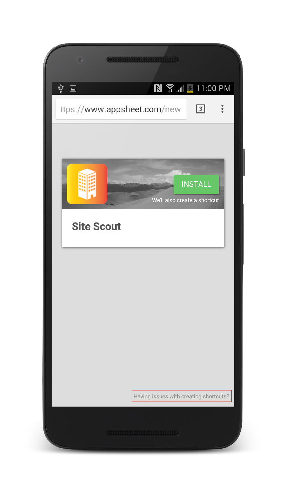

How does a user install your app with the install link? The link points to a page with instructions depending on the combination of platform and web browser that they are using.
Chrome and Firefox on Android:Chrome has features which allow us to detect whether or not AppSheet is installed on a user's device, which greatly simplifies the installation process. First, they are taken to a page that looks like this:

If AppSheet is already installed, tapping the Install button will open AppSheet to the app that you shared (in this case Driver Dispatch). Additionally, it will create a shortcut on the user's homescreen which also points to your app.
However, if AppSheet is not installed, the user will be taken to the following page:

Tapping Go will redirect to the Play Store, where the user can install AppSheet. Once they open it for the first time, they will be taken to the correct app (in this case, Driver Dispatch), and a shortcut will be placed on their homescreen.
Chrome Fallback to Old Install Experience
On some older phones, AppSheet cannot automatically create shortcuts for you, so you have the option to create it using a different approach. On the install page, in the bottom right, tap on the gray text that says "Having issues with creating shortcuts?" (outlined in red below)

Then, tap on the green "Old Install" button.
After that, you should see a page that looks like the one below. Follow the old instructions to create a shortcut (they can be found here: https://appsheethelp.zendesk.com../appsheethelp.zendesk.com/hc/en-us/articles/205803927-Deployment-from-an-install-link-old-)

Any other browser on Android:Browsers other than Chrome are less sophisticated, so this process is a bit more complicated. Once the user you shared your app with opens the link, they will be taken to a page that looks like this:
The user is presented with two options: one for when AppSheet is installed, and one for when it is not installed. If the user does not have AppSheet, they should install AppSheet from the Play Store. When they open it, they will be taken to the app that you shared (in this case Driver Dispatch), and a shortcut to the app will be placed on their homescreen.
However, if AppSheet is already installed, tapping the second button will launch AppSheet with the correct app and create a shortcut on the homescreen.
Safari on iOSOn iOS, Safari is the only supported browser at the moment. When the user opens the share link sent to them, they will see the following page:

Tapping the first button will install AppSheet. Then they have to come back and tap the Install Driver Dispatch button, which will then instruct them to create a shortcut on their homescreen. It will look like this:

Any other browser on iOS
Only Safari is currently supported on iOS. The following page is the one that opens up when you open the page in a browser other than iOS: